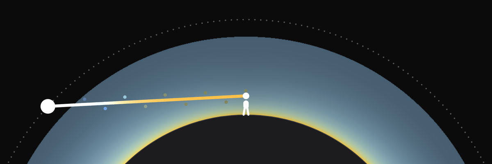
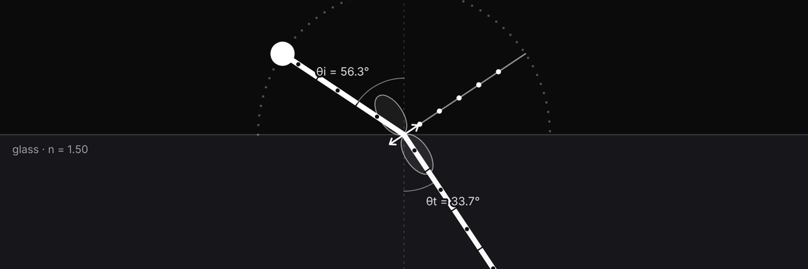
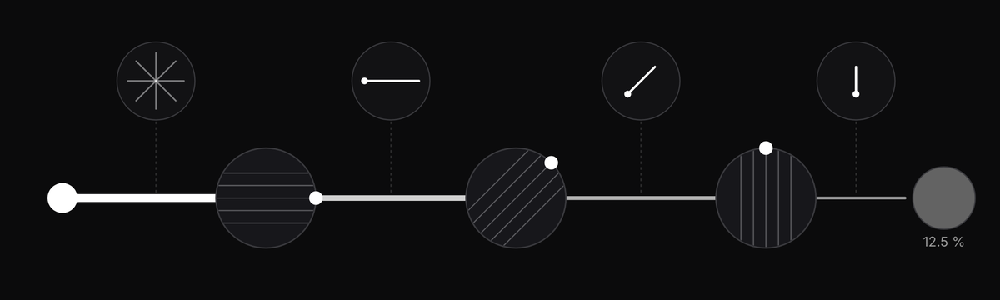

Interactive pages for the optics part of Experimental Physics 3 at TU Munich. Each page shows one effect as a scene you can move yourself, with the model and its assumptions and a check of the numerics against an exact result.


